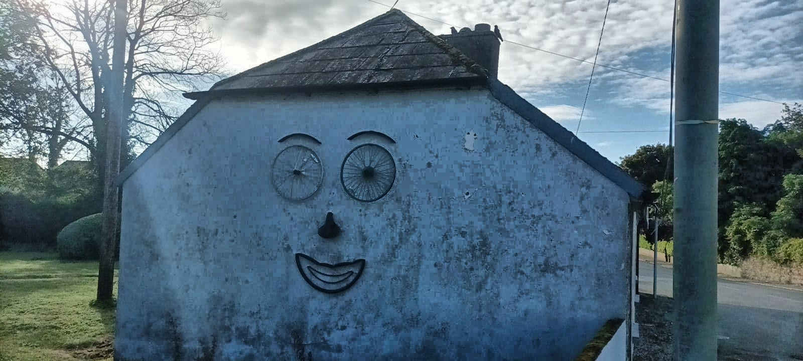

18 Ballycotton & Roche’s Point
“Clonvilla is the definition of the middle of nowhere”, says the fella on the phone from the mobile home park in Greater Youghal which doesn’t do tents. Very few spots in the municipal district of East Cork do tents and, if no one wants to holiday there, it suggests the coastline will be abitmeh, at least by Ireland standards. There’s another campsite closer to Cork city, in like ¿west East cork?, but the reviews suggest it is a bit of a Brad Swiss, with zero facilities, and a motorway for a soundtrack. So Clonvilla it is. Plus I want to revisit scaldyball Youghal and whence continue my way round the coastline. I’d’ve stalled it down here a fortnight ago but the tourist boat out to Ballycotton lighthouse is banjoed and I’ve been waiting patiently for its resuscitation. It’s still not fixed and the owners said it might be back in action this weekend. But I KantKope with all the waiting cos I wanna dunzo out this book, so I’m bringing the fam with me seeing as it school holiday time and our seven-year-old would only be sat at home, gamely twiddling his thumbs. Mixing family holidays with travel writing is a risky combo and the danger is that I’ll end up killing my bird with two stones. But cash is low this year and we all need to get the flock away soon.
18.0.1 No such thing as a free holiday
The good news, financially, if not chillaxilogically, is that we’ll get some Airbnb guests to pay for the trip, and we no longer have to worry about some landlord finding out. We spent the guts of the week prepping the gaff to go up on the Airbnb website – clean and snap, clean and snap, for every room – and then by the time we had guests booked, the whole gaff needed to be re-cleaned, with our existence being largely airbrushed out slashtag wedged into cupboards. The whole task was multiplied in its difficulty by the steadfast burglarizing tekkerz of our seventeen-month-old daughter, a live entropy monster who can empty five cupboards faster than you can empty one dishwasher. The whole ordeal is agonizingly stressful, and henceforth we need to outsource the clean-up job, which is a thing, according to Kilroy who regularly puts up his Roisin when he gets out of Dodge. But once the gaff is in order, you’re looking at a free basically holiday. A couple of spoofers book it and offer cash and I stupidly agree. We have the gaff like 80% ready to go on Friday night when they cancel via WhatsApp voice message. Something about Balbriggan being where the real value in the housing market lies. In the morning, neither of us has the emotional bandwidth to finish off the job and my wife just calls it, so we jam half the gaff into the Boola Bogger and hit the proverbial at like half eleven, happy to run away from the unfinished mess. She has to come up to collect her Rock’n’Roll on Wednesday inanyways so she’ll dunzo the jobski thenzo. It’s a single-shot drive to East Cork, but we pick up a wodge of camping gas in Dungarvan and then I’m oddly proud to show off Youghal to my wife and she declares it, in its natural beauty, to be the next Bray. In reality, it’s still emerging from its Brayrut phase.
18.0.2 Camping

We arrive in our campsite in time for a cheeky afternoon rainshower which clears the ground of any unwanted dust. The campsite is tight and does, as one online reviewer suggests, feel like camping in someone’s back garden. There are fewer than thirty pitches, between static mobile homes, caravans and campervans passing through, and a few of us third-class citizens in tents. But there’s no ball games allowed and no kids about. We won’t last long but just being outdoors is bliss enough for now. The place promotes itself as a stop-off point between the holiday hubs of West Cork and Wexford, and I’m putting us into that category because beachglorious greater Wexford basically begins at the southern end of Wicklow Head, an hour’s walk from our gaff. Our pitch is an unusually well-sheltered u-shape, with a wall at the back and four-foot picket fence on either side, so we can position the jammer up along the open end and create a giant play pen for our daughter to run riot. Our set up is barely a step above the seasoned festival-goer. A four-man tent, folding table and chairs, and a gas stove. This year’s big upgrade is a new air mattress, and the kids use it as a bouncy castle while my wife starts to cook up an Omani curry for the lads and lay the foundation for a long, mellowyellow summer’s evening. I crack open a warm one and scour the campsite for the bants. I return with some local cycling knowlz from a father-and-son duo who kindly give me some levers for changing a tyre as I’ve forgotten to bring any.
18.0.3 Ballymacoda

It’s a disgracefully cold 9 degrees when I wake up at 6 in the yAy-eM. and I’m not sure if the pains in my neck are because we forgot to bring pillows or because I was too lazy to lash on my scarf before bed. It feels like my body is already morphing into the physique of a rough sleeper and it’s a reminder of why humans surround themselves with many creature comforts. I have to lash on my sexy cycling jacket plus my mouldy-ass windbreaker, but I’m on the road soon after seven, and my bike is much comfier since I raised the handlebars as I can actually reach them without having to do six months of yoga or, as it used to be called, stretching. I also forgot my cleated cycling shoes – I really need a checklist for packing – but my pedals swing both ways and one side works with my smelly hiking shoes. Then I’m about 2k on the road when I remember I’ve left my spare tube buried in the car and I couldn’t be Gordoned going back for it.
18.0.4 South-facing geography
The southern coast of East Cork is very similar in its geography to West Waterford. Both are wide peninsulas with a coastline of cliffs and beaches, cut off from the main body of Ireland by sizeable bodies of water. West Waterford runs from Dungarvan Bay to the wide Blackwater River at Youghal, while East Cork runs from there to the enormous Cork Harbour. In both cases, the N25 road skirts across the top of the landmass, soaking up the traffic and keeping roads nice and quiet for cyclists and tractors. In terms of lighthouses, there is a need for a guidance light to help enter the harbours (Ballinacourty, Youghal and Roche’s Point) and a dramatic one to help ships avoid the entire landmass altogether (Mind Head, Ballycotton). I’ve been to Youghal lighthouse already, on my way from Dungarvan Bay, and now I’m headed for Roche’s Point, which marks the entry to the Cork Harbour. In between is the beautifully situated Ballycotton Lighthouse, on a tiny island off Ballycotton village, and there is also an unfinished, abandoned precursor lighthouse on Capel Island, just off Knockadoon point. It’s only a few clicks out of the way so I decide to head there first and check it out.

I turn left out of the campsite and soon cross a bridge over the Womanagh River whose marshy estuary looks as pretty as can be in the cold but bright sunshine. I head for the little village of Ballymacoda where I’m delighted to find an upside-down map painted on the wall, oriented to highlight the important stuff to the tourist. The beaches to the left are actually east of the village, and the inaccessible little island is in the top-left corner, where I’m heading, south-east of here. Many years ago I tracked down an upside down map of the world and hung it on my wall. I probably got the idea from the anticlockwise clock that Leonard had in our gaff when we were in first year in college. Both take a bit of getting used to but I love being surrounded by things that subvert arbitrary convention because they remind you that world doesn’t have to be this way. You don’t always want your map with north at the top because that orientation may not best display the information you want to convey. Like with a piece of writing, you want to most important stuff in view at the top and the excess of detail hanging down the bottom of it.
18.0.5 Knockadoon & Capel Island
It’s a few easy clicks down towards little Knockadoon Pier which is little more than a gap in the mid-sized cliffs, with two permavans for coffee, ice cream and chips. I pull over, plonk my bike down beside a off-road lay-by with some tasteful picnic benches and photos of Knockadoon’s fishing past. I struggle to make smalltalk with a quiet fisherman – I’m yet to meet any other kind – who is preparing a jam-packed kayak for a morning on the mellow sea. Then I stroll down towards the short, skinny pier to admire the glorious views. A few football fields across the water is a pretty little island, drumlin-shaped, but nibbled around the edges like a biscuit belonging to a bored child. On top is an incomplete lighthouse which was being built when, the story goes, there was a shipwreck near Ballycotton Island and the lighthouse location was moved there, a choice helped by the fact that there had already been some debate over which island would be the best choice. But I bet there’s good mathematical principles behind the choosing the optimal spot. Something to do with, like, the positive swervation of the Earth’s surface.
I take a few snaps and head back to my bike when the fisherman, driven by helpful necessity, calls me and says he heard my tyre pop. I can’t believe it. There’s no glass on the ground. No thorns in my tyre. It just blew. Maybe I overpumped it. But along with leaving the spare tube in my car, I’ve not brung a repair kit cos I thought the spare would be enough. And now I’m stranded and kicking myself. It’s 8am and I’m 10k from the campsite so I’m going to have to call my wife to rescue me, and destroy their lazy holiday morning. She doesn’t answer so I text her the Jacques Chirac, knowing she’ll at least be proud, with her new driving licence, to come and rescue me. The sort of get-out-of-jail card you don’t want to play too often.
It takes me a while to realise that my irritation is just the gap between what I had planned for the day and what is available for me here. I’m in an extraordinarily beautiful place on a lovely sunny morning and a signpost tells me about the cliff walks all around, so I just accept my fate and decide to enjoy this scenic outpost. A notice explains a bit about the birds in the area and the fact that sea cliffs are the habitat least affected by human intervention, which is little surprise, given our struggles with the z-axis. The only ancient woodlands I have encountered in this country are all in valleys too steep to inhabit, notwithstanding the treehouses built by the Glen of the Downs protesters back in the David Norris.
The views along the cliff walk are outstanding, climaxing at an abandoned stone signal tower which, apart from looking like a Minecraft character. This tower dates from 1803 and was part of a network of signal towers built in response to the French efforts to land arms in Bantry Bay in 1796, as part of the failed Irish Revolution.1 They chose its location well as it boasts a longitudinous view of the coastline. 12 nautical miles to my left slash east sits lonely Mine Head lighthouse in Waterford, up high on its cliff. To my right slash west, about half that distance away, is Ballycotton lighthouse and its pointy village, curling back towards me from the wide, curved beachy bay in between.
I mosey round the rest of the walk, about 3k in total I’d say, and I’m starting to worry I’ll have to walk home, as my wife is yet to get back to me and maybe her phone is brown bread. I’m doing a bit of frantic Googling, looking for tube-fixing hacks, but the best solution I can find is to tie a knot around the severed part of the tube, pump it up as best as possible, and then bike-limp home. On my way back, I see a cluster of teenagers wandering around a little campus but they don’t reply to my half-arsed efforts to get their attention. Eventually I find a older lad out hanging out the back of it, vaping on his Marcel Dobler, and he explains, in his phat Dundalk accent, that he’s one of thirty leaders looking after a hundred-odd teenagers on a summer camp. Mostly down from Dublin, Dundalk and Newry area, all of them somehow connected to the Dominicans who own this campus. Say what you want about the Catholic stranglehold on education in this country, but who else has the assets to ship a hundred kids off to a glorious seaside retreat? My son’s newly built school doesn’t even have any grass.
The Team Leader can’t help me so I just chillax on the benches and lay into a brunch of crackers, cheese and nuts. My wife eventually texts back to say she’s found the tube in the car and will be on her way. It’s a good chance to write up my notes and eventually another fisherman-kayaker rocks up in a van and happens to have a spare tube. Finally a yappy fisherman who is not wholly engrossed in his own world. My wife arrives two minutes later and is devvo to find out that her heroism has been relegated to second place, as I’m already changing the tube. The good news is that I will still have a sparesie as a damaged tyre can lead to a succession of punctures, and that might be the problem.
The picnic benches are the perfect terminus for adults but it turns out to be a mare for a marauding toddler as there’s just enough traffic to wreck the buzz. A grump comes over to inform us our car is parked in a designated space which is something I’ve never seen associated with a food van. Usually it’s car park of a HSE building where all the big shots have private spaces and everyone knows their place. Eventually we get half-settled for some coffee from the camping stove, which she brought with her, along with a cardboard box for a pantry. But really we need to be on the beach or somewhere carless where you can sit back and let the sand or the grass mind the kids. My wife grew up in a country with some proper inequality and anyone with a half-decent job had the cash for the grunt work to be done by a basically slave. So you could eat and play with your kids then leave the aftermath to the #help. Sometimes I wish I could park my guilt and move to one of those places, although Oman still feels off limits for us :(
An elderly lady on a bike comes over and gets ready to rest it where mine was so I shout out to stop her but she’s having none of it and now we have another mild enemy sitting on the other bench. Her elderly son is sound enough but he’s just befuddled by our existence. It’s a curious atmosphere, where everyone has multiple roles. I’m now mixing parent and husband with explorer cyclist, interrupting fun with the family to drain local knowledge out of punters. Meanwhile, my wife is sniffing out the peeps to work out the collective mood of the Cork People. Any excuse for cheap conflict is her analysis, and, with my bike fixed, we eventually hit the proverbial, me for Ballycotton and the others for a beach along the way.
18.0.6 Garryvoe
something beautiful about this
could get used to more time with family on the road,
but awkward to have competing priorities.
It’s a 20k spin from here to there and there first ten clicks are just classic This is Belgium territory. Back roads with nothing happening. Typical lowlumpy Ireland. Nothing too flat and nothing too steep. The smell of cows. Hedges. Farms. Actual cows, chillaxing under the Booka Shade. It’s time for my mind to wander and to contemplate how happy I am that my family are at long last on my cycle. Yet their well-being is nagging at me because we didn’t agree on the next stop and that’s now clogging up my mental bandwidth. It’s a reminder of why travel writing requires self-centredness. If you’re responsible to anything at all, you’re not doing your job. The problem gets me a few sentences today, but that’s hardly repeatable material. Any future collaboration will require clarity in our roles.
The view across the bay emerges from behind the hedges and Ballycotton Island looks like a lovely little birthday cake with a single candle on top, unburnt this time. I’m trying to get there by 12 noon on the off chance the lighthouse tour is back on, and I text them to let them know I’ll be there in the nick of time, #justincaseylike. I take a wrong turn before Garryvoe and as I’m doing a U-turn, I bump into my family, taking the same wrong turn. It turns out they are heading to the beach there so I agree to meet them there after I’m done. Which means Roche’s Point Lighthouse will have to wait another day. I nip down to the beach, before them somehow, and have a quick goo at the multiple vendors along the long car park. Coffee, ice cream and chips, like anywhere. A wee cake sale run by possibly retired ladies. Someone selling trinkety gifts. A sauna. I love the low-barrier-to-entry economy and I feellike it;s growing due to all the bolloxology that comes with setting up a business. Taxes & insurance and the need for décor and all those non-essentials that drive up the price of everything in our overly complex society. It reminds me of my own unemployment and the complexity of most jobs. You need to know so much for many jobs and I couldn’t be Gordoned getting to know more. The problem about getting another job in AI slash machine learning is that you’re up against cleverer, eagerer, annoyinger young people, with fully-functioning brains, and you have to keep on learning. I wentahead and mastered R and data visualization and how to babysit a machine learning model in production. But now it has to be python and interactive dashboards and large language models, and I can only get myself up for that if subject matter is interesting enough to me. Audiobooks yeah. Customer churn no. I don’t love code like the way I love writing. I just like the output. Learning to code was interesting and helpful but I don’t like it enough to re-learn it and re-update myself, as though I am the computer. I really don’t know what I’m going to do for a living but sacrificing my existence to that world, all for an extra grand a month, isn’t how I want to do it.
It’s in this state of panic that I complete the remaining 7k to Ballycotton via Shanagarry, inland while the beach takes the shortest path along the bay. En route I pass by a Kilkenny Design shop and I’m surprised that such a small place would have such a large store. But rural Ireland is smattered with sundry gems that can only survive by drawing in punters from afar. The situation is explained a bit when I see a sign for Ballymaloe Cookery school, which I first encountered as a child through Darina Allen’s Simply Delicious TV show, a curiosity wherein someone Irish actually cared about the components of their food, unlike anyone who made the food I was exposed to. Years later, I remember Reggie White first and Jasper O’Connor later on going there for like a summer of intensive cooking and then landing themselves jobs in kitchens Pat Rafterwards, thence forging successful careers in that field. That was like peak recession era, when Reggie’s short-lived career as an estate agent on a moped went tits up, while Jasper was just one of many of my Orts Degree peers who had no useful skills for which anyone might actually give them money. He hit the middle-class panic button and did some kind of law diploma for a year before realising it wasn’t for him. Before Jasper learnt to cook, it’d be me who’d cook roasts for a dozen mates, a labour of love that has mostly fizzled out of my life, and now I am about to cycle past this scran hub in a hurry. Seemingly, we can book a five-course meal in Ballymaloe House, but dinner in a chipper is the largest struggle we can manage with two kids bouncing about the gaff.
18.1 Ballycotton
The beach in Garryvoe has tracked me all the way to Ballycotton where I’m met by a wedge-shaped village on a rock, with houses painted in garish slabs of colour that harmonise somewhat to brighten up this rain-sodden island of greygreen misery. A small crowd gawk at me from a cafe which has squatted outside a deconsecrated church. A number of gastrojuicers bounce out of the long, narrow main street where moving cars take turns to jostle past parked ones, while pedestrian families must wend through any gaps, like roadspace scavengers. Eventually the road forks and one road leads to the little harbour down below. Along the pier is the office for the lighthouse tours, but as closed. It’s what I expected but I’m still disappointed and it’ll be some time before I can get back. At the far end of the pier, a car blasts out some crap rap and five topless lads sit up high on the pier wall, screaming to be heard above the beats. Their buzz is too good to be interrupted, even for shits’n’giggz, so I stall it back up the near end of the pier to admire the view and take photos of the lighthouse.
18.1.1 Lighthouse
The tide is out and it looks like you could walk across the low-tide rocks to the lovely lighthouses. But it turns out that the low rocks only connect ot the low Inner Island. Obscured from here is the water separating it from the Christmas Pudding Outer Island, with its unlikely black tower on top. At first the families lived on the island with the on-duty lighthouse keeper, but later the families moved to the village and the keeper would do a fortnight of duty on his Marcel. The family could wave across or send semaphore messages using flags. I suspect that they may have used this method to keep track of live sports scores. Up with the flags whenever a goal or point is scored. Like following sport on Aertel or Ceefax, back in the Andy Gray, when you’d repeatedly refresh the TV to see if Robbie Fowler had scored yet. It’d be a tough task to track modern hurling though. Puck, puck, score. Later on today, Cork will beat Limerick, by 1-28 to 0-30, meaning the onland flagwaver would have to make 59 signals over 70 minutes of action.
I hang around to chat to watch the passers-by and grill them on their existence. A couple of Iron Curtain dodgers are heading out to pick periwinkles among the rocks. One of them opens with a big hello and bit of weather chat, which is a shock, but he can’t back up the phatic chat with anything of substance. A family of Desi females, beautifully attired, sneak past and down the steps to the rocks, scouring them for pretty prebbles. A middle-aged couple are out walking their daughter’s dog. She has a holiday home here and it’s great to get out of Midleton whenever they can. I finally understand why Cork people claim an Independent People’s Republic. Since they can work and holiday within their own county, they don’t need the rest of the country. This is why they are like the French and the Californians and even the Welsh. Smug and insular, but with an inner fulfilment the rest of us can’t have.
Another two walkers tell me that one of their dogs is a rescue. It’s amazing how readily dog people talk about their dogs, often as a precursor to a quick therapy session for themselves. They’d love to go down to the rocks but this fella is nothing but trouble off the lead. I’m not a hundy pee whether they are a couple or siblings or bezzies or what, something tight anyhoo, but the lady gives me the full rundown of the rescue dog’s life, beaten and battered, and frightened to death of high-viz jackets. Eventually the man has had enough and he skilfully ends the needless blether with a blast of humour. “Meanwhile, this other dog has been treated like a princess all her life’. He marches off as we all laugh but I’m left wondering if it’s him who wants to be treated like a princess, of if there’s just a biteen of the Bennie off every male Corkonian.
I stall it back to the church-cum-cafe to write up my notes but it turns out they’ve restored the whole thing rather tastefully and lashed in a restaurant along with a venue in the old church. I grab an obligatory pint of Murphy’s and sit in the waiting area where I can watch the staff in action and dodge the stodgy restaurant vibes. It’s only 24k to Roche’s Point lighthouse but I decide to leave it on the long finger and head back to the boola beach for some #qualitytime with my actual family.
https://historyireland.com/ethnic-cleansing-protestant-decline-in-west-cork-between-1911-and-1926/